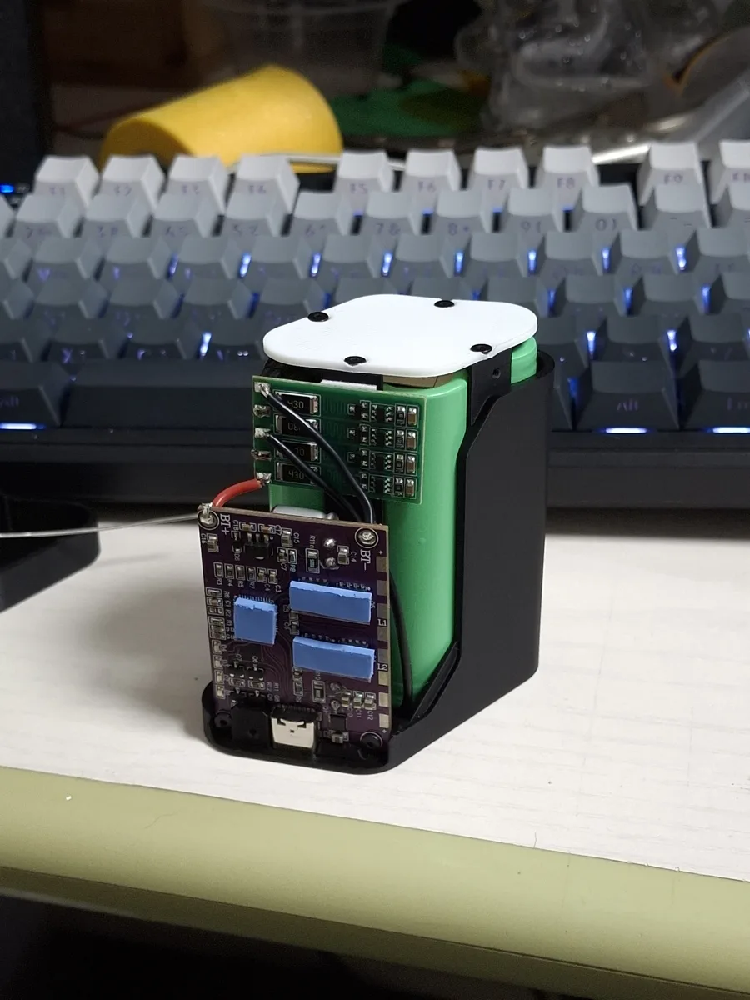
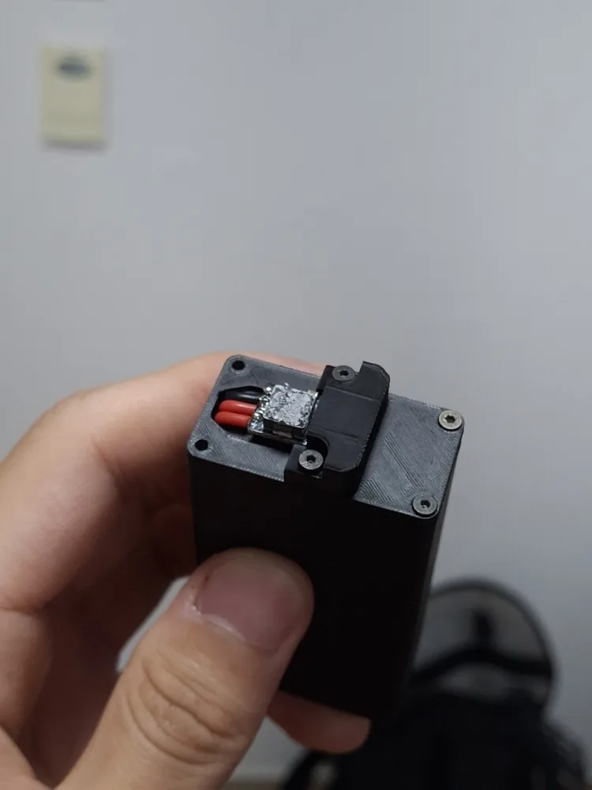

4S Power Bank
네 번 다시 만든
4S 보조배터리
셀 4개를 직렬로 묶은 4S1P 보조배터리입니다. 쓸 수 없던 첫 프로토타입에서 시작해 네 번째 45W 버전은 약 6개월 동안 실제로 썼습니다. 하우징은 모두 PLA로 출력하고 나사로 조립했습니다.

네 번째 버전, 45W 보조배터리
셀 4개를 직렬로 묶은 4S1P 보조배터리입니다. 쓸 수 없던 첫 프로토타입에서 시작해 네 번째 45W 버전은 약 6개월 동안 실제로 썼습니다. 하우징은 모두 PLA로 출력하고 나사로 조립했습니다.
네 번째 버전, 45W 보조배터리
| 버전 | 바꾼 것 | 결과 |
|---|---|---|
| 유리판 2023.08 | 드릴용 BMS와 100W PCB, 투명판 덮개 | 크고 무거워 쓸 수 없음 |
| 보조배터리 3 2023.10 | 크기와 무게를 크게 줄임 | 열이 빠지지 않아 PLA가 녹거나 충전 속도가 제한됨 |
| 보조배터리 5 2025.10 | BMS 대신 밸런싱, 써멀 패드와 구리 테이프, 옆면 볼트 | 처음으로 실제 사용 가능 |
| 45W 2025.12 | 45W PCB, 배터리·PCB 고정 방식 단순화 | 약 6개월 사용 |
아크릴이나 PC 같은 투명 소재로 하우징을 만드는 전자기기에서 영감을 받아, 2mm 투명판을 덮개로 쓰는 하우징으로 시작했습니다. 안에는 드릴용 BMS와 100W PCB를 넣었습니다.
하지만 크고 무거운 데다 내구성도 약해 사실상 쓸 수 없는 프로토타입이었습니다. 고등학생이던 저에게 투명 소재 가공비도 부담스러워서 투명 하우징은 이 버전에서 접었습니다.

유리판 버전 설계
같은 드릴용 BMS와 100W PCB를 쓰면서 크기와 무게를 크게 줄였습니다. 뚜껑 부품에 PCB와 배터리를 달고(배터리와 BMS는 붙어 있는 설계), 본체를 그 위에 덮어 닫는 구조입니다.
문제는 열이었습니다. 부품이 하우징의 넓은 면에 닿지 않고 안쪽 공기로만 식다 보니 열이 빠지지 못해 내부 PLA가 녹거나 충전 속도가 제한됐습니다. 내구성도 여전히 아쉬웠습니다.


앞선 문제를 대부분 고쳐 처음으로 실제로 쓸 수 있게 된 버전입니다. 크기를 줄이려고 BMS를 빼고 셀 밸런싱만 넣었습니다. 판매용이 아니어서 괜찮다고 판단했고, 지금도 셀 전압을 계속 확인하고 있습니다.
열은 기판에 써멀 패드를 붙여 하우징의 넓은 면으로 보내고, 하우징 면에는 구리 테이프를 넓게 붙여 하우징 전체가 방열판 역할을 하게 했습니다. 따로 방열 구조를 두지 않았지만 과열 문제는 없었습니다.
뚜껑처럼 닫은 뒤 옆면에서 볼트로 고정합니다. 볼트에 하중이 실리지 않아 내구성도 좋아졌습니다.


네 번째이자 완성형입니다. 100W와 비슷한 설계에서 배터리와 PCB를 고정하는 방식을 바꾸고, 45W로 충전과 방전이 되는 PCB로 교체했습니다. PCB의 버튼으로 보조배터리를 조작합니다.
고정 방식을 단순하게 바꾸자 길이와 크기가 줄었고 내구성도 크게 좋아졌습니다. 2026년 3월에 출력한 뒤 9월 입대 전까지 약 6개월 동안 실제로 썼습니다. 옆면의 핀은 방열 효과가 크지 않아 디자인 요소에 가깝습니다.
4S 이전에 만든 별개의 보조배터리입니다. 셀 2개를 병렬로 묶고 5V 3A 충방전 모듈을 회색 출력 케이스에 넣었습니다. 5V 출력 단자에 C타입 단자를 그대로 이어 썼는데 연결한 기기가 전원을 인식하지 못했습니다.
C타입 출력 단자는 CC 핀에 풀업 저항(Rp, 10~56kΩ)이 있어야 연결된 기기가 전원을 알아봅니다. 이 저항이 없어서였던 것으로 보고 있습니다.

1S2P 15W 보조배터리
입출력이 모두 되는 보드인 줄 알고 하우징까지 만들었지만, 기판 사양을 잘못 읽은 것이었습니다. 충전 입력만 되는 보드라 보조배터리로 쓸 수 없었습니다.


셀 3개를 직렬로 묶은 3S 45W 보조배터리의 회로와 케이스를 설계하고 있습니다.